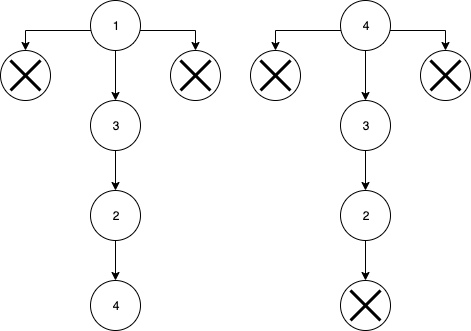
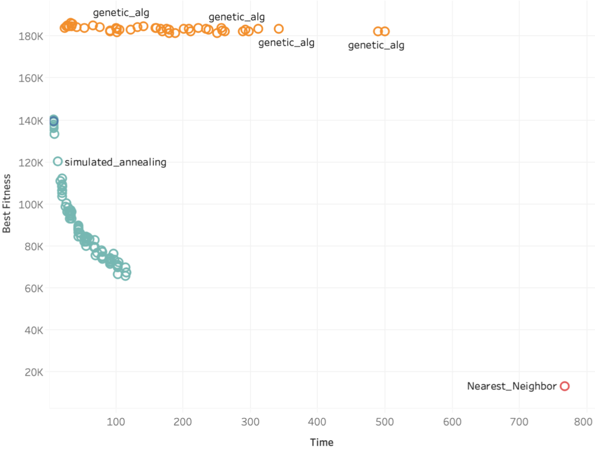

Problema del Agente Viajero
Investigación de Operaciones
Investigación de Operaciones
Rutas hamiltonianias distintas para n = 634 ~ 1,51352765 × 101502
50! ~ 3.0414093x1064 supera ampliamente el poder computacional de todo el planeta junto.
Held & Karp (1962): Programación dinámica. Calcular las soluciones de todos los subproblemas más pequeños, empezando con el más pequeño. O(n2 * 2n)
Permutar nodos en rutas 2 a 2.
Si cR2 < cR1 -> tomar R2
Si cR2>cR1 -> tomar R2 si exp(cR1-cR2)/T > rand(0,1)
T disminuye con el paso de iteraciones
Tomar un conjunto de rutas P
Combinar rutas:
R1 : a,b,c,d,e,f,a
R2 : a,d,e,c,f,b,a
R+ : a,d,e,c,b,f,a
Es uno de los mas sencillos de utilizar y genera un camino corto pero no ideal para el TSP
Este algoritmo es una busqueda a profundidad con una heuristica que para cada nodo inicial calcula la ruta siempre al vecino más cercano y cuando recorre todos los puntos compara cual es el que tiene una ruta mínima, acotando los nodos que visita por la distancia mínima.
Hicimos una comparación sobre el tiempo que tarda cada algoritmo y cual es la distancia que encuentra
Creamos las animaciones para las rutas obtenidas por cada algoritmo.
Genético
Annealing
Vecinos más cercanos
Uso de una buena heuristica es indispensable para aproximarnos a la solución.
Las heuristicas (buenas) aunque nos ayudan a aproximarnos, no dan el resultado deseado.
Uso de cotas para podar las ramas de las búsquedas en profundidad.
Reducir la cantidad de nodos iniciales, ayudó a mejorar los tiempos.
Propuesta: Uso de K-Means Clusters para optimizar cada cluster y después unirlos.